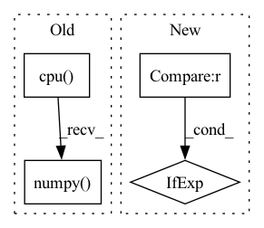

Pattern ID :17745
Before Change
expand_dim = (None,) * (ndim_model - ndim)
with torch.no_grad():
output = model(torch.from_numpy(input_[expand_dim]).to(device)).cpu().numpy()
if crop_padding is not None:
crop_padding = (slice(None),) * (output.ndim - len(crop_padding)) + crop_padding
output = output[crop_padding]After Change
expand_dim = (None,) * (ndim_model - ndim)
with torch.no_grad():
model_input = torch.from_numpy(input_[expand_dim]).to(device)
output = model(model_input) if prediction_function is None else prediction_function(model, model_input)
output = output.cpu().numpy()
if crop_padding is not None:In pattern: SUPERPATTERN
Frequency: 4
Non-data size: 4
Instances Fragment ID: 58429871
Project Name: constantinpape/torch-em
Commit Name: 6ac61459969816e979efcc328c3b6e38fafb6630
Time: 2023-03-09
Author: constantin.pape@embl.de
File Name: torch_em/util/prediction.py
M Class Name: AnonimousClass
N Class Name: AnonimousClass
M Method Name: predict_with_padding(6)
N Method Name: predict_with_padding(5)
M Parent Class:
N Parent Class:
M File Name: torch_em/util/prediction.py
N File Name: torch_em/util/prediction.py
M Start Line: 43
M End Line: 43
N Start Line: 12
N End Line: 52
Before Change
"""
// scaled_x = (torch.clamp(x, -1, 1) + 1) * 255 / 2
scaled_x = torch.clamp(x, 0, 1) * 255 // from [0., 1.]
return scaled_x.cpu().numpy() .astype("uint8")
After Change
Input: torch.float, shape: [..., c, h, w], range (approx.): [min_val, max_val]
Output: np.uint8, shape: [..., h, w, c], range: [0, 255]
"""
permutation = (1, 2, 0) if x.ndim == 3 else (0, 2, 3, 1)
x = x - min_val // ~[0, max_val - min_val]
x = x / (max_val - min_val) // ~[0, 1]
x = x * 255. // ~[0, 255] Fragment ID: 58429870
Project Name: ais-bonn/vp-suite
Commit Name: d2bf29df71add95ee00718db88df2cc1bb9624a5
Time: 2021-12-21
Author: boltres@ais.uni-bonn.de
File Name: vp_suite/dataset/dataset_utils.py
M Class Name: AnonimousClass
N Class Name: AnonimousClass
M Method Name: postprocess_img(3)
N Method Name: postprocess_img(1)
M Parent Class:
N Parent Class:
M File Name: vp_suite/dataset/dataset_utils.py
N File Name: vp_suite/dataset/dataset_utils.py
M Start Line: 12
M End Line: 18
N Start Line: 16
N End Line: 28
Before Change
is_tensor = True
if dets.is_cuda:
device_id = dets.get_device()
dets_np = dets.detach().cpu().numpy()
elif isinstance(dets, np.ndarray):
is_tensor = False
dets_np = dets
else:After Change
dets_th = dets
elif isinstance(dets, np.ndarray):
is_numpy = True
device = "cpu" if device_id is None else "cuda:{}".format(device_id)
dets_th = torch.from_numpy(dets).to(device)
else:
raise TypeError( Fragment ID: 58429869
Project Name: wxinlong/solo
Commit Name: e421e832883241bd7831bf77dc31d5fb31d7da58
Time: 2019-04-06
Author: chenkaidev@gmail.com
File Name: mmdet/ops/nms/nms_wrapper.py
M Class Name: AnonimousClass
N Class Name: AnonimousClass
M Method Name: nms(3)
N Method Name: nms(3)
M Parent Class:
N Parent Class:
M File Name: mmdet/ops/nms/nms_wrapper.py
N File Name: mmdet/ops/nms/nms_wrapper.py
M Start Line: 11
M End Line: 33
N Start Line: 26
N End Line: 49
Before Change
original_predictions = self._original_predictions
// handle only first image (batch=1)
predictions_in_xyxy_format = original_predictions.xyxy[0].cpu().detach().numpy()
object_prediction_list = []
// process predictionsAfter Change
object_prediction_list_per_image = []
for image_ind, image_predictions_in_xyxy_format in enumerate(original_predictions.xyxy):
shift_amount = shift_amount_list[image_ind]
full_shape = None if full_shape_list is None else full_shape_list[image_ind]
object_prediction_list = []
// process predictions Fragment ID: 58429872
Project Name: obss/sahi
Commit Name: 248cd2df7d3450eea48c0f03b75d1b7d0111dcf4
Time: 2021-12-19
Author: 34196005+fcakyon@users.noreply.github.com
File Name: sahi/model.py
M Class Name: Yolov5DetectionModel
N Class Name: Yolov5DetectionModel
M Method Name: _create_object_prediction_list_from_original_predictions(3)
N Method Name: _create_object_prediction_list_from_original_predictions(3)
M Parent Class: DetectionModel
N Parent Class: DetectionModel
M File Name: sahi/model.py
N File Name: sahi/model.py
M Start Line: 470
M End Line: 509
N Start Line: 433
N End Line: 484